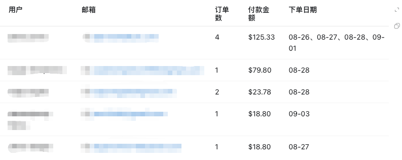
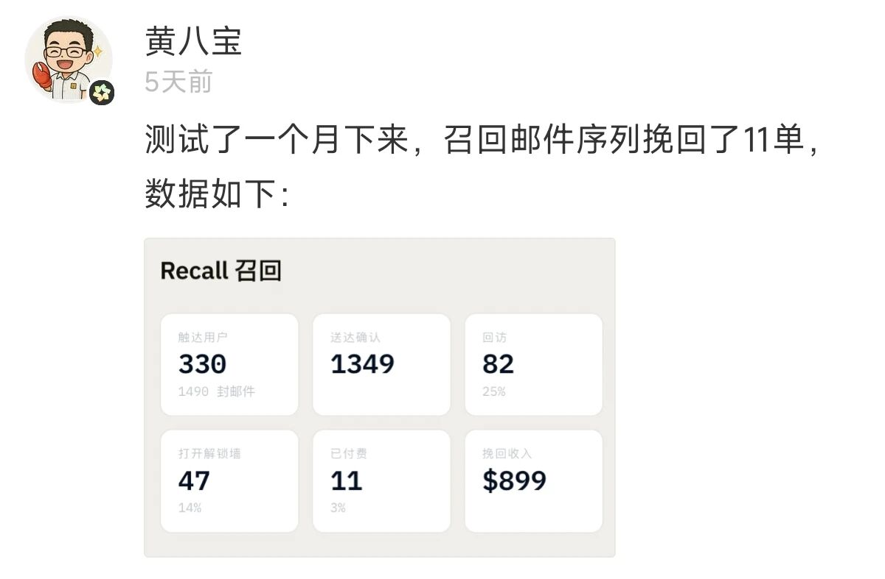

早上好，朋友们！ 最近出去玩了几天，回来刚好看看之前发送召回邮件效果。我是8.25号发送的邮件，总计发送给了105个用户，召回5个用户，付款9单，付款金额$266.51。

刚好我还刷到了黄八宝老师最近也测试了邮件召回序列，他成功挽回了$899 美金收益。所以看上去邮件召回这个大家可以去多试试。

新用户欢迎
这个是用户来了，可能会发送一份欢迎邮件，欢迎用户，同时告诉用户产品的一些亮点、优惠，发送这样的邮件，可以让忘记你网址的用户，找回来你的这个网站。也可以通过亮点，优惠信息引导用户消费。
打开付款页面
用户已经走到付费页面了，这个时候用户的付费意愿可能还是比较强的，有部分用户可能是想看看有没有折扣，有折扣可能会付款；有的用户可能是付款还是会有些顾虑；有的用户可能就是无法进行付款。这个时候的邮件可以：通过限时折扣催单，或者是通过一些说明、用户口碑打消用户的疑虑。甚至你还可以去和用户沟通一下，看看他们不付款的原因是什么，后续的召回邮件就可以基于这个内容去写。
流失的付费用户召回
这个就是我本次执行的召回操作，感觉有些用户可能就是忘记了你的产品。我是筛选付费超过20美金的用户，然后赠送了他们一些积分。我告诉用户有模型上新，赠送了他们一些积分，邀请他们回来体验。
普通用户的召回
这个可以用一些活动、一些新内容、节日、模型上新等，给用户一个回来的理由，去邀请他们回来。
召回到其他网站
如果你们的产品都是同一类型的网站，侧重不同的人群，也可以考虑把用户召回到另外一个更符合他用户画像的网站上去。
大家可以把召回这些步骤，做成一个组合拳去使用，也可以把每个环节拆分更加细节的维度去测试邮件召回的效果。邮件的成本比较低，大家可以试试不同的效果。还有就是注意不要一次大批量发送，后续可能你的邮件就进垃圾箱了。
我是赫兹，专注网站出海，持续分享网站出海内容。